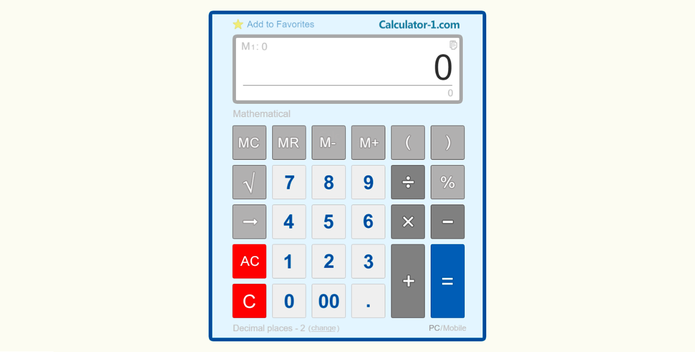

Aknakereső
Mindig is szerettem a számítógépes játékokat, így elhatároztam, hogy megpróbálkozom egy saját fejlesztésű
egyszerűbb játék létrehozásával. Az interneten találtam instrukciókat, hogyan álljak neki egy aknakereső játék
létrehozásához.

Számológép
Ez volt az első önálló projektem, amit nem egy tutorial videó alapján készítettem el, hanem egyéni
ötletek alapján,
illetve a Google segítségével.
Online hamburger rendelés
Ezt a projektet az újratervezés program videója által kínált útmutató segítségével hoztam létre. Életem első weboldala,
illetve annak kezdetleges formája, remélem rövid időn belül ennél komolyabb weblabokat is létre tudok hozni.